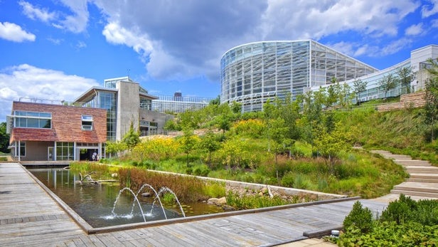

BIM Use: Sustainability Evaluation

Sustainability (LEED)
A process in which a BIM project is evaluated based on LEED (Leadership in Energy and Environmental Design) or other sustainable criteria (e.g., EEWH in Taiwan).
This process should occur during all stages of a facility's life including planning, design, construction, and operation. Applying sustainable features in the **planning and early design phases** is most effective (highest ability to impact design) and efficient (lowest cost of change).
Integration Note: This requires early contractual integration. Beyond goals, the process adds calculations and documentation. Energy simulations should be performed in an integrative environment with clearly defined responsibilities.
- Facilitates early interaction, collaboration, and coordination of team members.
- Enables early and reliable evaluation of design alternatives (e.g., orientation, facade performance).
- Availability of critical information early helps resolve cost premiums and schedule conflicts efficiently.
- Shortens the actual design process by facilitating early decisions.
- Reduces documentation load; concurrently prepared calculations accelerate certification.
- Reduces operational costs via improved energy management.
- Increases emphasis on environmentally friendly design.
- Assists project team with potential future revisions throughout the lifecycle.
- Delivers better overall project quality.
- Design Authoring Software (e.g., Revit)
- Sustainability Analysis Tools (e.g., Insight, Tally)
- LEED/EEWH Credit Tracking Templates
- Material Databases (EPD info)
- Ability to create and review 3D Models for data extraction.
- Knowledge of up-to-date LEED/EEWH Credit Information.
- Ability to organize and manage the material database.
- Understanding of Lifecycle Assessment (LCA) workflows.